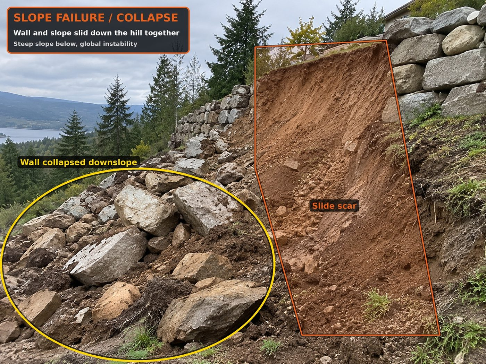
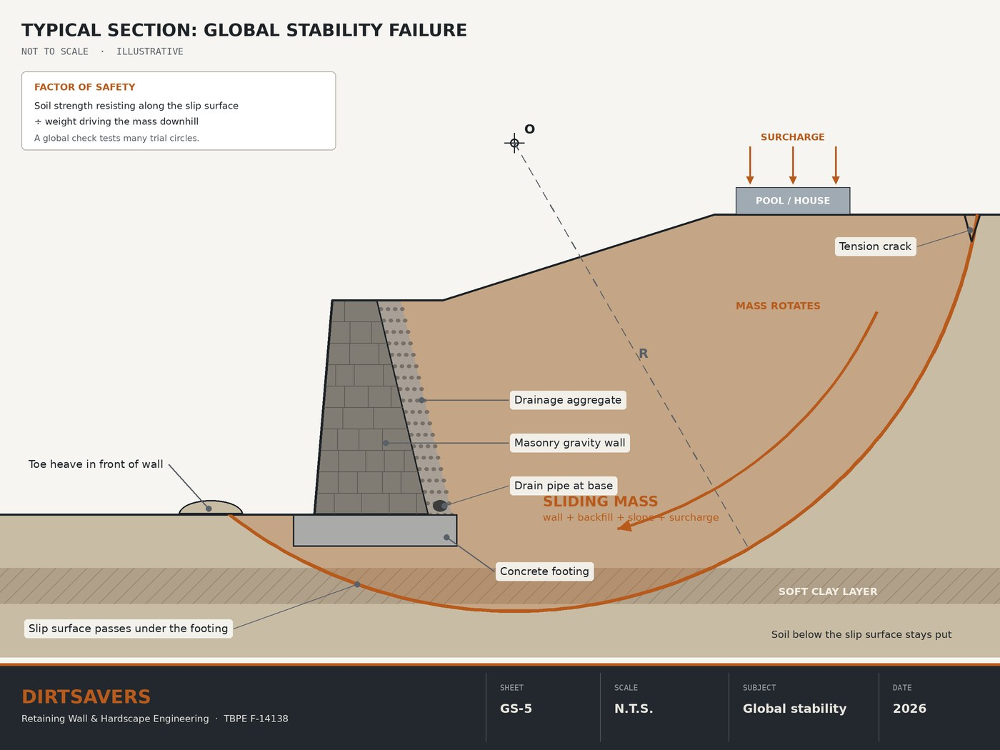
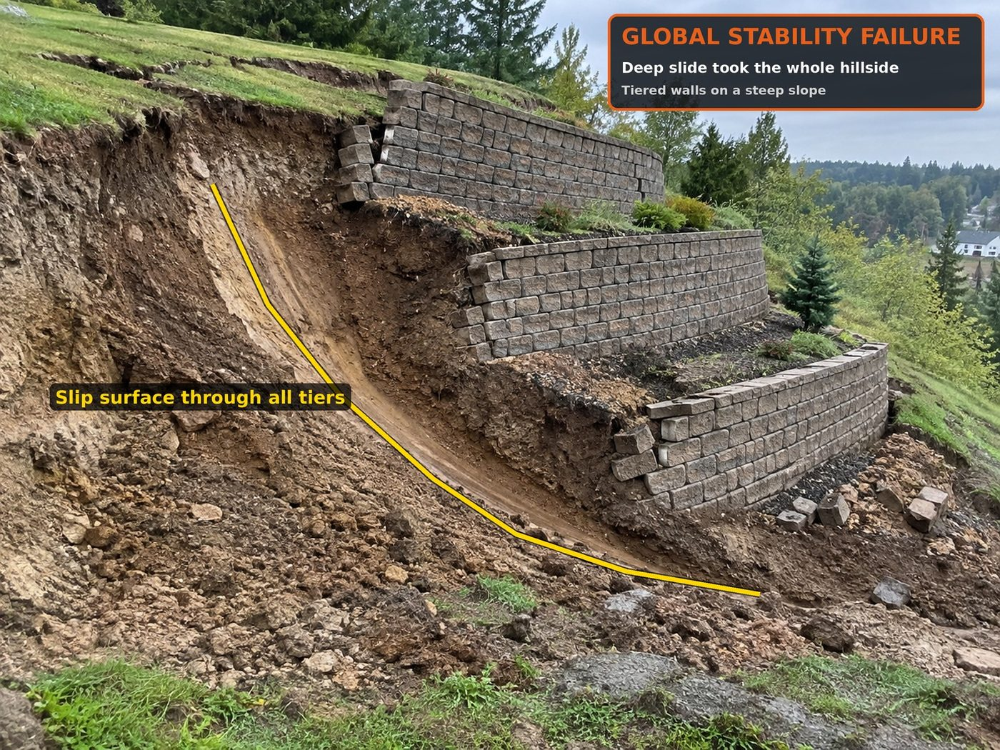
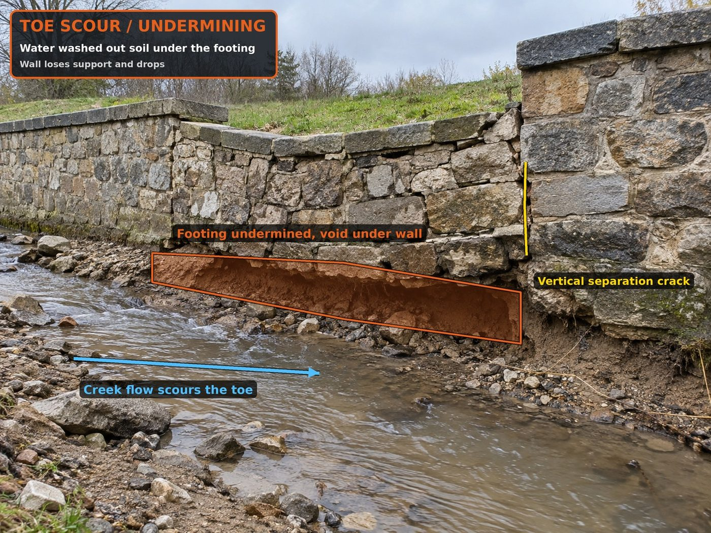

Global stability analysis
The check that looks past the wall
A retaining wall can be designed and built correctly and still move, if the ground it sits in moves. A global stability analysis checks the slope, the wall and the soil together, so that question is answered before the wall goes in.
What it is
A normal wall design checks the wall itself: that it will not slide, tip over or sink, and that the wall itself is strong enough. Global stability looks at a bigger piece of ground. It checks a deep, curved slip surface that runs behind the wall and underneath it.
If the soil along that surface cannot hold, the wall, the backfill and the yard above all move together as one block. The wall can be in perfect shape and still end up at the bottom of the slope.
One minute on global stability
What it is and when to ask for it.
When a job should have one
Not every wall needs it. These are the conditions where we recommend it.
Why it is easy to miss
The standard wall calculations stop at the wall and its footing. On many projects the wall plans list global stability as "by others," and sometimes nobody else picks it up.
There is also nothing to see until it moves. The slip surface is deep in the ground, so the first signs are usually a crack in the yard above the wall or a bulge at the toe, often after a wet season. At that point the repair can cost many times what the analysis would have.

2
What it looks like when it goes
Illustrations of the conditions above.

5

1

4
Images are illustrations created for this page, not photos of DirtSavers projects.
What we provide
We run global stability for walls we design and for walls designed by others, using the soil data from the geotechnical report. You receive a sealed analysis with the factor of safety for each section we check.
If a section comes up short, we give you the fix along with it: a wider base, a deeper footing, a flatter slope, more space between tiers, or better drainage.
Not sure if your job needs it?
We can help.
Send us your grading plan and geotechnical report, and we will look at whether a global stability check makes sense for your walls.
Send your plans